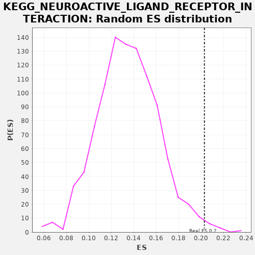

| | | Dataset | drug_embeddings_gsea |
| Phenotype | NoPhenotypeAvailable |
| Upregulated in class | na_pos |
| GeneSet | KEGG_NEUROACTIVE_LIGAND_RECEPTOR_INTERACTION |
| Enrichment Score (ES) | 0.20286305 |
| Normalized Enrichment Score (NES) | 1.5029573 |
| Nominal p-value | 0.01 |
| FDR q-value | 0.30981532 |
| FWER p-Value | 0.997 |
Table: GSEA Results Summary
 Fig 1: Enrichment plot: KEGG_NEUROACTIVE_LIGAND_RECEPTOR_INTERACTION
Fig 1: Enrichment plot: KEGG_NEUROACTIVE_LIGAND_RECEPTOR_INTERACTION
Profile of the Running ES Score & Positions of GeneSet Members on the Rank Ordered List
| PROBE | GENE SYMBOL | GENE_TITLE | RANK IN GENE LIST | RANK METRIC SCORE | RUNNING ES | CORE ENRICHMENT | | 1 | CHRNA5 | | | 57 | 1.000 | 0.0012 | Yes |
| 2 | P2RY14 | | | 105 | 1.000 | 0.0030 | Yes |
| 3 | CHRNA1 | | | 112 | 1.000 | 0.0077 | Yes |
| 4 | MTNR1A | | | 121 | 1.000 | 0.0122 | Yes |
| 5 | HRH4 | | | 301 | 1.000 | 0.0049 | Yes |
| 6 | CHRNA2 | | | 315 | 1.000 | 0.0091 | Yes |
| 7 | P2RX4 | | | 340 | 1.000 | 0.0126 | Yes |
| 8 | NMBR | | | 369 | 1.000 | 0.0157 | Yes |
| 9 | P2RY4 | | | 375 | 1.000 | 0.0205 | Yes |
| 10 | TAAR2 | | | 459 | 1.000 | 0.0198 | Yes |
| 11 | OPRL1 | | | 491 | 1.000 | 0.0228 | Yes |
| 12 | P2RX5 | | | 506 | 1.000 | 0.0269 | Yes |
| 13 | P2RX1 | | | 601 | 1.000 | 0.0255 | Yes |
| 14 | BDKRB1 | | | 646 | 1.000 | 0.0276 | Yes |
| 15 | GIPR | | | 652 | 1.000 | 0.0323 | Yes |
| 16 | HTR1E | | | 780 | 1.000 | 0.0286 | Yes |
| 17 | MC3R | | | 781 | 1.000 | 0.0337 | Yes |
| 18 | GRM4 | | | 838 | 1.000 | 0.0349 | Yes |
| 19 | GABRG1 | | | 866 | 1.000 | 0.0382 | Yes |
| 20 | C3AR1 | | | 877 | 1.000 | 0.0426 | Yes |
| 21 | GABRA2 | | | 986 | 1.000 | 0.0402 | Yes |
| 22 | HTR1D | | | 1018 | 1.000 | 0.0432 | Yes |
| 23 | P2RX2 | | | 1076 | 1.000 | 0.0443 | Yes |
| 24 | GALR2 | | | 1140 | 1.000 | 0.0450 | Yes |
| 25 | GALR1 | | | 1181 | 1.000 | 0.0474 | Yes |
| 26 | DRD5 | | | 1239 | 1.000 | 0.0485 | Yes |
| 27 | CHRNA6 | | | 1390 | 1.000 | 0.0433 | Yes |
| 28 | NMUR1 | | | 1391 | 1.000 | 0.0483 | Yes |
| 29 | CNR2 | | | 1405 | 1.000 | 0.0525 | Yes |
| 30 | HTR1F | | | 1454 | 1.000 | 0.0543 | Yes |
| 31 | GABRG3 | | | 1466 | 1.000 | 0.0587 | Yes |
| 32 | ADORA3 | | | 1502 | 1.000 | 0.0613 | Yes |
| 33 | C5AR1 | | | 1510 | 1.000 | 0.0659 | Yes |
| 34 | MC2R | | | 1520 | 1.000 | 0.0704 | Yes |
| 35 | OPRK1 | | | 1588 | 1.000 | 0.0709 | Yes |
| 36 | MCHR2 | | | 1624 | 1.000 | 0.0736 | Yes |
| 37 | NMUR2 | | | 1668 | 1.000 | 0.0757 | Yes |
| 38 | RXFP2 | | | 1729 | 1.000 | 0.0766 | Yes |
| 39 | NPFFR1 | | | 1739 | 1.000 | 0.0811 | Yes |
| 40 | GRPR | | | 1839 | 1.000 | 0.0793 | Yes |
| 41 | GABRD | | | 1851 | 1.000 | 0.0837 | Yes |
| 42 | CALCRL | | | 1870 | 1.000 | 0.0875 | Yes |
| 43 | CYSLTR1 | | | 1892 | 1.000 | 0.0912 | Yes |
| 44 | NPY5R | | | 1906 | 1.000 | 0.0954 | Yes |
| 45 | TSHB | | | 2035 | 1.000 | 0.0916 | Yes |
| 46 | GRIK3 | | | 2177 | 1.000 | 0.0870 | Yes |
| 47 | PTH2R | | | 2208 | 1.000 | 0.0900 | Yes |
| 48 | MAS1 | | | 2306 | 1.000 | 0.0884 | Yes |
| 49 | HCRTR1 | | | 2307 | 1.000 | 0.0935 | Yes |
| 50 | CHRND | | | 2333 | 1.000 | 0.0968 | Yes |
| 51 | CHRNE | | | 2366 | 1.000 | 0.0997 | Yes |
| 52 | HTR1B | | | 2407 | 1.000 | 0.1020 | Yes |
| 53 | FPR2 | | | 2409 | 1.000 | 0.1071 | Yes |
| 54 | GRM6 | | | 2419 | 1.000 | 0.1115 | Yes |
| 55 | HTR5A | | | 2423 | 1.000 | 0.1164 | Yes |
| 56 | CRHR2 | | | 2435 | 1.000 | 0.1208 | Yes |
| 57 | NPY2R | | | 2472 | 1.000 | 0.1234 | Yes |
| 58 | NPY1R | | | 2501 | 1.000 | 0.1265 | Yes |
| 59 | NPFFR2 | | | 2614 | 1.000 | 0.1239 | Yes |
| 60 | DRD1 | | | 2659 | 1.000 | 0.1259 | Yes |
| 61 | GH2 | | | 2679 | 1.000 | 0.1297 | Yes |
| 62 | P2RY1 | | | 2690 | 1.000 | 0.1341 | Yes |
| 63 | GRIK4 | | | 2719 | 1.000 | 0.1373 | Yes |
| 64 | TRHR | | | 2739 | 1.000 | 0.1411 | Yes |
| 65 | CHRNG | | | 2747 | 1.000 | 0.1457 | Yes |
| 66 | HTR4 | | | 2785 | 1.000 | 0.1482 | Yes |
| 67 | S1PR5 | | | 2811 | 1.000 | 0.1516 | Yes |
| 68 | MC5R | | | 2861 | 1.000 | 0.1533 | Yes |
| 69 | MTNR1B | | | 2902 | 1.000 | 0.1556 | Yes |
| 70 | GRM8 | | | 2921 | 1.000 | 0.1595 | Yes |
| 71 | APLNR | | | 2928 | 1.000 | 0.1642 | Yes |
| 72 | ADORA2B | | | 2986 | 1.000 | 0.1653 | Yes |
| 73 | P2RX3 | | | 3024 | 1.000 | 0.1678 | Yes |
| 74 | HTR2B | | | 3034 | 1.000 | 0.1723 | Yes |
| 75 | CHRNB4 | | | 3170 | 1.000 | 0.1681 | Yes |
| 76 | NTSR2 | | | 3196 | 1.000 | 0.1714 | Yes |
| 77 | NTSR1 | | | 3200 | 1.000 | 0.1763 | Yes |
| 78 | CHRNA3 | | | 3235 | 1.000 | 0.1791 | Yes |
| 79 | LTB4R | | | 3304 | 1.000 | 0.1795 | Yes |
| 80 | CHRNB3 | | | 3346 | 1.000 | 0.1817 | Yes |
| 81 | GLP2R | | | 3381 | 1.000 | 0.1845 | Yes |
| 82 | GABRA6 | | | 3458 | 1.000 | 0.1843 | Yes |
| 83 | CHRNB1 | | | 3472 | 1.000 | 0.1885 | Yes |
| 84 | HCRTR2 | | | 3515 | 1.000 | 0.1907 | Yes |
| 85 | LPAR3 | | | 3518 | 1.000 | 0.1957 | Yes |
| 86 | P2RY11 | | | 3531 | 1.000 | 0.1999 | Yes |
| 87 | CHRM1 | | | 3626 | 1.000 | 0.1985 | Yes |
| 88 | MCHR1 | | | 3638 | 1.000 | 0.2029 | Yes |
| 89 | PTH1R | | | 3759 | 0.967 | 0.1995 | No |
| 90 | MC4R | | | 3795 | 0.962 | 0.2020 | No |
| 91 | VIPR2 | | | 3861 | 0.955 | 0.2023 | No |
| 92 | RXFP1 | | | 3969 | 0.947 | 0.1998 | No |
| 93 | GABRB3 | | | 4056 | 0.941 | 0.1986 | No |
| 94 | HTR7 | | | 4125 | 0.935 | 0.1987 | No |
| 95 | GALR3 | | | 4466 | 0.918 | 0.1798 | No |
| 96 | LTB4R2 | | | 4480 | 0.917 | 0.1836 | No |
| 97 | DRD4 | | | 4637 | 0.909 | 0.1774 | No |
| 98 | HTR2C | | | 4673 | 0.907 | 0.1796 | No |
| 99 | GRIN3A | | | 4785 | 0.901 | 0.1766 | No |
| 100 | P2RY8 | | | 4815 | 0.899 | 0.1791 | No |
| 101 | HTR1A | | | 4899 | 0.895 | 0.1780 | No |
| 102 | ADORA1 | | | 4919 | 0.894 | 0.1812 | No |
| 103 | GABRA3 | | | 5035 | 0.888 | 0.1778 | No |
| 104 | CRHR1 | | | 5161 | 0.883 | 0.1736 | No |
| 105 | PTGER4 | | | 5211 | 0.880 | 0.1747 | No |
| 106 | GRID2 | | | 5312 | 0.875 | 0.1722 | No |
| 107 | GPR35 | | | 5337 | 0.873 | 0.1750 | No |
| 108 | GABRR2 | | | 5423 | 0.869 | 0.1736 | No |
| 109 | GRIN3B | | | 5448 | 0.868 | 0.1764 | No |
| 110 | S1PR1 | | | 5467 | 0.867 | 0.1795 | No |
| 111 | GRM5 | | | 5536 | 0.863 | 0.1792 | No |
| 112 | GABRB2 | | | 5612 | 0.859 | 0.1784 | No |
| 113 | OXTR | | | 5656 | 0.856 | 0.1798 | No |
| 114 | GABRB1 | | | 5741 | 0.852 | 0.1783 | No |
| 115 | PRLHR | | | 5921 | 0.844 | 0.1702 | No |
| 116 | ADCYAP1R1 | | | 6002 | 0.839 | 0.1690 | No |
| 117 | F2RL2 | | | 6049 | 0.838 | 0.1701 | No |
| 118 | CHRNA7 | | | 6084 | 0.836 | 0.1720 | No |
| 119 | S1PR2 | | | 6163 | 0.832 | 0.1708 | No |
| 120 | CSH1 | | | 6203 | 0.830 | 0.1724 | No |
| 121 | ADORA2A | | | 6208 | 0.830 | 0.1763 | No |
| 122 | CYSLTR2 | | | 6292 | 0.826 | 0.1748 | No |
| 123 | TAAR5 | | | 6329 | 0.824 | 0.1765 | No |
| 124 | S1PR3 | | | 6436 | 0.819 | 0.1733 | No |
| 125 | LPAR2 | | | 6595 | 0.810 | 0.1665 | No |
| 126 | GRM7 | | | 6621 | 0.810 | 0.1689 | No |
| 127 | ADRA2C | | | 6750 | 0.803 | 0.1642 | No |
| 128 | GABRG2 | | | 6833 | 0.799 | 0.1626 | No |
| 129 | GRM1 | | | 6875 | 0.796 | 0.1638 | No |
| 130 | CALCR | | | 6877 | 0.796 | 0.1678 | No |
| 131 | P2RX6 | | | 6896 | 0.795 | 0.1706 | No |
| 132 | GRIK1 | | | 6965 | 0.792 | 0.1699 | No |
| 133 | HRH2 | | | 7030 | 0.788 | 0.1695 | No |
| 134 | GABRA1 | | | 7137 | 0.782 | 0.1662 | No |
| 135 | HRH3 | | | 7170 | 0.780 | 0.1679 | No |
| 136 | GRIA4 | | | 7357 | 0.770 | 0.1590 | No |
| 137 | CHRM5 | | | 7448 | 0.766 | 0.1567 | No |
| 138 | GABRR1 | | | 7547 | 0.759 | 0.1537 | No |
| 139 | GRIN2C | | | 7595 | 0.757 | 0.1543 | No |
| 140 | VIPR1 | | | 7704 | 0.751 | 0.1507 | No |
| 141 | OPRD1 | | | 7714 | 0.750 | 0.1539 | No |
| 142 | HTR2A | | | 7728 | 0.750 | 0.1568 | No |
| 143 | S1PR4 | | | 7812 | 0.746 | 0.1549 | No |
| 144 | MC1R | | | 7879 | 0.742 | 0.1541 | No |
| 145 | GRIK5 | | | 7949 | 0.738 | 0.1531 | No |
| 146 | AVPR1A | | | 7968 | 0.736 | 0.1556 | No |
| 147 | GABRA4 | | | 8002 | 0.734 | 0.1570 | No |
| 148 | CNR1 | | | 8014 | 0.734 | 0.1600 | No |
| 149 | GABBR2 | | | 8168 | 0.724 | 0.1531 | No |
| 150 | TRPV1 | | | 8285 | 0.716 | 0.1488 | No |
| 151 | GRM3 | | | 8298 | 0.716 | 0.1516 | No |
| 152 | GRIA2 | | | 8367 | 0.713 | 0.1505 | No |
| 153 | GH1 | | | 8459 | 0.707 | 0.1478 | No |
| 154 | PTGDR | | | 8465 | 0.707 | 0.1511 | No |
| 155 | GRIA3 | | | 8469 | 0.706 | 0.1545 | No |
| 156 | AVPR1B | | | 8497 | 0.705 | 0.1562 | No |
| 157 | ADRA1B | | | 8524 | 0.704 | 0.1580 | No |
| 158 | LPAR6 | | | 8527 | 0.703 | 0.1614 | No |
| 159 | F2RL3 | | | 8570 | 0.701 | 0.1621 | No |
| 160 | CCKBR | | | 8615 | 0.699 | 0.1626 | No |
| 161 | CHRM2 | | | 8619 | 0.699 | 0.1660 | No |
| 162 | DRD2 | | | 8623 | 0.699 | 0.1693 | No |
| 163 | CHRM3 | | | 8712 | 0.693 | 0.1668 | No |
| 164 | ADRA2B | | | 8714 | 0.693 | 0.1702 | No |
| 165 | GABRE | | | 8726 | 0.693 | 0.1730 | No |
| 166 | TSPO | | | 8737 | 0.692 | 0.1758 | No |
| 167 | GCGR | | | 8744 | 0.692 | 0.1789 | No |
| 168 | P2RY2 | | | 8820 | 0.686 | 0.1772 | No |
| 169 | FSHB | | | 8961 | 0.679 | 0.1710 | No |
| 170 | GRM2 | | | 8993 | 0.677 | 0.1723 | No |
| 171 | SCTR | | | 9033 | 0.675 | 0.1731 | No |
| 172 | FSHR | | | 9064 | 0.673 | 0.1744 | No |
| 173 | GLRB | | | 9181 | 0.665 | 0.1698 | No |
| 174 | AGTR1 | | | 9463 | 0.648 | 0.1536 | No |
| 175 | PRSS3 | | | 9498 | 0.645 | 0.1546 | No |
| 176 | GLRA2 | | | 9504 | 0.645 | 0.1575 | No |
| 177 | PTGFR | | | 9508 | 0.645 | 0.1606 | No |
| 178 | OPRM1 | | | 9547 | 0.642 | 0.1612 | No |
| 179 | F2RL1 | | | 9780 | 0.626 | 0.1484 | No |
| 180 | PRLR | | | 9802 | 0.624 | 0.1501 | No |
| 181 | SSTR5 | | | 9869 | 0.621 | 0.1487 | No |
| 182 | DRD3 | | | 9966 | 0.613 | 0.1452 | No |
| 183 | GRIA1 | | | 10131 | 0.600 | 0.1369 | No |
| 184 | SSTR2 | | | 10148 | 0.598 | 0.1388 | No |
| 185 | CHRNA4 | | | 10158 | 0.598 | 0.1413 | No |
| 186 | MLNR | | | 10218 | 0.594 | 0.1402 | No |
| 187 | PTAFR | | | 10263 | 0.592 | 0.1402 | No |
| 188 | GRID1 | | | 10265 | 0.592 | 0.1431 | No |
| 189 | LEPR | | | 10396 | 0.590 | 0.1372 | No |
| 190 | ADRB1 | | | 10488 | 0.589 | 0.1339 | No |
| 191 | TACR2 | | | 10784 | 0.584 | 0.1164 | No |
| 192 | TACR3 | | | 10786 | 0.584 | 0.1193 | No |
| 193 | GLP1R | | | 10793 | 0.584 | 0.1219 | No |
| 194 | AVPR2 | | | 10840 | 0.583 | 0.1217 | No |
| 195 | GHRHR | | | 10847 | 0.583 | 0.1242 | No |
| 196 | HTR6 | | | 10963 | 0.581 | 0.1192 | No |
| 197 | CHRNB2 | | | 10966 | 0.580 | 0.1221 | No |
| 198 | EDNRA | | | 11084 | 0.578 | 0.1169 | No |
| 199 | CCKAR | | | 11109 | 0.578 | 0.1182 | No |
| 200 | GHR | | | 11222 | 0.576 | 0.1134 | No |
| 201 | LHCGR | | | 11273 | 0.575 | 0.1129 | No |
| 202 | PRSS1 | | | 11442 | 0.572 | 0.1041 | No |
| 203 | SSTR1 | | | 11496 | 0.571 | 0.1034 | No |
| 204 | THRB | | | 11536 | 0.570 | 0.1036 | No |
| 205 | GRIN2D | | | 11610 | 0.568 | 0.1014 | No |
| 206 | CHRM4 | | | 11637 | 0.568 | 0.1025 | No |
| 207 | PTGER3 | | | 11648 | 0.568 | 0.1047 | No |
| 208 | PTGER2 | | | 11678 | 0.567 | 0.1056 | No |
| 209 | ADRB3 | | | 11804 | 0.564 | 0.0999 | No |
| 210 | PTGER1 | | | 11874 | 0.563 | 0.0979 | No |
| 211 | TSHR | | | 11913 | 0.562 | 0.0982 | No |
| 212 | GRIN1 | | | 11942 | 0.561 | 0.0991 | No |
| 213 | GNRHR | | | 11971 | 0.560 | 0.1000 | No |
| 214 | KISS1R | | | 12043 | 0.558 | 0.0980 | No |
| 215 | LPAR1 | | | 12105 | 0.557 | 0.0966 | No |
| 216 | THRA | | | 12129 | 0.557 | 0.0978 | No |
| 217 | BDKRB2 | | | 12211 | 0.555 | 0.0950 | No |
| 218 | PRL | | | 12227 | 0.554 | 0.0968 | No |
| 219 | PARD3 | | | 12303 | 0.552 | 0.0945 | No |
| 220 | TBXA2R | | | 12369 | 0.551 | 0.0928 | No |
| 221 | GRIK2 | | | 12422 | 0.550 | 0.0920 | No |
| 222 | F2R | | | 12484 | 0.548 | 0.0905 | No |
| 223 | CGA | | | 12577 | 0.545 | 0.0870 | No |
| 224 | SSTR3 | | | 12646 | 0.543 | 0.0850 | No |
| 225 | GZMA | | | 12683 | 0.542 | 0.0853 | No |
| 226 | SSTR4 | | | 12748 | 0.540 | 0.0836 | No |
| 227 | HRH1 | | | 12762 | 0.539 | 0.0855 | No |
| 228 | AGTR2 | | | 12784 | 0.539 | 0.0868 | No |
| 229 | GPR50 | | | 12790 | 0.538 | 0.0892 | No |
| 230 | FPR1 | | | 12918 | 0.534 | 0.0831 | No |
| 231 | CHRNA9 | | | 13085 | 0.527 | 0.0743 | No |
| 232 | GRIN2A | | | 13217 | 0.521 | 0.0679 | No |
| 233 | LHB | | | 13295 | 0.518 | 0.0652 | No |
| 234 | GRIN2B | | | 13316 | 0.517 | 0.0665 | No |
| 235 | CTSG | | | 13519 | 0.505 | 0.0550 | No |
| 236 | F2 | | | 13574 | 0.501 | 0.0539 | No |
| 237 | P2RX7 | | | 13604 | 0.500 | 0.0544 | No |
| 238 | ADRA1A | | | 13614 | 0.499 | 0.0563 | No |
| 239 | EDNRB | | | 13728 | 0.491 | 0.0510 | No |
| 240 | LEP | | | 13756 | 0.489 | 0.0516 | No |
| 241 | ADRB2 | | | 13795 | 0.486 | 0.0515 | No |
| 242 | GABBR1 | | | 14060 | 0.462 | 0.0356 | No |
| 243 | TACR1 | | | 14136 | 0.451 | 0.0327 | No |
| 244 | NR3C1 | | | 14352 | 0.412 | 0.0199 | No |
| 245 | PLG | | | 14378 | 0.407 | 0.0203 | No |
| 246 | GHSR | | | 14564 | 0.356 | 0.0093 | No |
Table: GSEA details [plain text format]

Fig 2: KEGG_NEUROACTIVE_LIGAND_RECEPTOR_INTERACTION: Random ES distribution
Gene set null distribution of ES for KEGG_NEUROACTIVE_LIGAND_RECEPTOR_INTERACTION